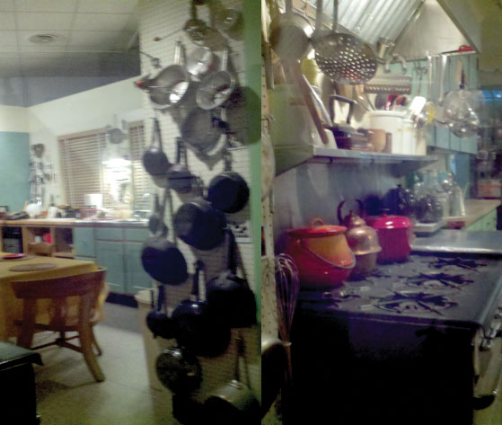

Are female and male athletes at the professional and college levels treated equally? You might think, 40 years since the passing of Title IX (the civil rights law that prohibits sex discrimination in education including athletics) and with the growing visibility of women athletes in sports such as golf, basketball, hockey, and tennis, that the answer would be an easy yes. But Professor Michael Messner’s (2002)Messner, M. A. (2002). Taking the field: Women, men, and sports. Minneapolis: University of Minnesota Press. unobtrusive research shows otherwise, as does Professors Jo Ann M. Buysse and Melissa Sheridan Embser-Herbert’s (2004)Buysse, J. A. M., & Embser-Herbert, M. S. (2004). Constructions of gender in sport: An analysis of intercollegiate media guide cover photographs. Gender & Society, 18, 66–81. content analysis of college athletics media guide photographs. In fact, Buysse and Embser-Herbert’s unobtrusive research shows that traditional definitions of femininity are fiercely maintained through colleges’ visual representations of women athletes as passive and overtly feminine (as opposed to strong and athletic). In addition, Messner and colleagues’ (Messner, Duncan, & Jensen, 1993)Messner, M. A., Duncan, M. C., & Jensen, K. (1993). Separating the men from the girls: The gendered language of televised sports. Gender & Society, 7, 121–137. content analysis of verbal commentary in televised coverage of men’s and women’s sports shows that announcers’ comments vary depending on an athlete’s gender identity. Such commentary not only infantilizes women athletes but also asserts an ambivalent stance toward their accomplishments.
Without unobtrusive research we might be inclined to think that more has changed for women athletes over the past 40 years than actually has changed.
In this chapter, we explore unobtrusive methods of collecting data. Unobtrusive researchMethods of collecting data that don’t interfere with the subjects under study. refers to methods of collecting data that don’t interfere with the subjects under study (because these methods are not obtrusive). Both qualitative and quantitative researchers use unobtrusive research methods. Unobtrusive methods share the unique quality that they do not require the researcher to interact with the people he or she is studying. It may seem strange that sociology, a discipline dedicated to understanding human social behavior, would employ a methodology that requires no interaction with human beings. But humans create plenty of evidence of their behaviors—they write letters to the editor of their local paper, they create various sources of entertainment for themselves such as movies and televisions shows, they consume goods, they walk on sidewalks, they lie on the grass in public parks. All these activities leave something behind—worn paths, trash, recorded shows, and printed papers. These are all potential sources of data for the unobtrusive researcher.
Sociologists interested in history are likely to use unobtrusive methods, which are also well suited to comparative research. Historical comparative researchResearch that focuses on more than one location or time period. is “research that focuses either on one or more cases over time (the historical part) or on more than one nation or society at one point in time (the comparative part)” (Esterberg, 2002, p. 129).Esterberg, K. G. (2002). Qualitative methods in social research. Boston, MA: McGraw-Hill. While not all unobtrusive researchers necessarily conduct historical, comparative, or even some combination of historical and comparative work, unobtrusive methods are well suited to such work. As an example, Melissa Weiner (2010)Weiner, M. (2010). Power, protest, and the public schools: Jewish and African American struggles in New York City. Piscataway, NJ: Rutgers University Press. used a historical comparative approach to study racial barriers historically experienced by Jews and African Americans in New York City public schools. Weiner analyzed public records from several years of newspapers, trial transcripts, and several organizations as well as private manuscript collections to understand how parents, children, and other activists responded to inequality and worked to reform schools. Not only did this work inform readers about the little-known similarities between Jewish and African American experiences, but it also informs current debates over inequalities experienced in public schools today.
In this chapter, we’ll examine content analysis as well as analysis of data collected by others. Both types of analysis have in common their use of data that do not require direct interaction with human subjects, but the particular type and source of data for each type of analysis differs. We’ll explore these similarities and differences in the following sections, after we look at some of the pros and cons of unobtrusive research methods.
As is true of the other research types examined in this text, unobtrusive research has a number of strengths and several weaknesses.
Researchers who seek evidence of what people actually do, as opposed to what they say they do (as in survey and interview research), might wish to consider using unobtrusive methods. Field researchers may also claim this advantage over interview and survey research, but field researchers cannot be certain about what effect their presence in the field may have on the people and the interactions that they observe. While unobtrusive research projects, like all research projects, face the risk of introducing researcher biasBias that occurs when the preconceptions of a researcher—either intentionally or, more typically, unintentionally—shape her or his findings. into the work, researchers employing unobtrusive methods do not need to be concerned about the effect of the research on their subjects. This effect, known as the Hawthorne effectA situation that occurs when research subjects, either intentionally or unintentionally, alter their behaviors because they know they are being studied., is not a concern for unobtrusive researchers because they do not interact directly with their research participants. In fact, this is one of the major strengths of unobtrusive research.
Another benefit of unobtrusive research is that it can be relatively low-cost compared to some of the other methods we’ve discussed. Because “participants” are generally inanimate objects as opposed to human beings, researchers may be able to access data without having to worry about paying participants for their time (though certainly travel to or access to some documents and archives can be costly).
Unobtrusive research is also pretty forgiving. It is far easier to correct mistakes made in data collection when conducting unobtrusive research than when using any of the other methods described in this text. Imagine what you would do, for example, if you realized at the end of conducting 50 in-depth interviews that you’d accidentally omitted two critical questions from your interview guide. What are your options? Reinterview all 50 participants? Try to figure out what they might have said based on their other responses? Reframe your research question? Scratch the project entirely? Obviously none of these options is ideal. The same problems arise if a mistake is made in survey research. For field researchers, the consequences of “messing up” during data collection can be even more disastrous. Imagine discovering after tagging along on a political candidate’s campaign that you needed a “do-over.” In this case, that simply isn’t an option. The campaign is over, and you’d need to find a new source of data. Fortunately for unobtrusive researchers, going back to the source of the data to gather more information or correct some problem in the original data collection is a relatively straightforward prospect.
Finally, as described in Section 11.1 "Unobtrusive Research: What Is It and When to Use It?", unobtrusive research is well suited to studies that focus on processes that occur over time. While longitudinal surveys and long-term field observations are also suitable ways of gathering such information, they cannot examine processes that occurred decades before data collection began, nor are they the most cost-effective ways to examine long-ranging processes. Unobtrusive methods, on the other hand, enable researchers to investigate events and processes that have long since passed. They also do not rely on retrospective accounts, which may be subject to errors in memory, as some longitudinal surveys do.
In sum, the strengths of unobtrusive research include the following:
While there are many benefits to unobtrusive research, this method also comes with a unique set of drawbacks. Because unobtrusive researchers analyze data that may have been created or gathered for purposes entirely different from the researcher’s aim, problems of validity sometimes arise in such projects. It may also be the case that data sources measuring whatever a researcher wishes to examine simply do not exist. This means that unobtrusive researchers may be forced to tweak their original research interests or questions to better suit the data that are available to them. Finally, it can be difficult in unobtrusive research projects to account for context. In a field research project, for example, the researcher is able to see what events lead up to some occurrence and observe how people respond to that occurrence. What this means for unobtrusive research is that while it can be difficult to ascertain why something occurred, we can gain a good understanding of what has occurred.
In sum, the weaknesses of unobtrusive research include the following:
Want to see the Hawthorne effect in action? Check out this totally nonscientific yet wholly entertaining application of the principle from Korea:
What evidence of the Hawthorne effect do you see in the video?
This section focuses on how to gather data unobtrusively and what to do with those data once they have been collected. There are two main ways of gathering data unobtrusively: conducting a content analysis of existing texts and analyzing physical traces of human behavior. We’ll explore both approaches.
One way of conducting unobtrusive research is to analyze texts. Texts come in all kinds of formats. At its core, content analysis addresses the questions of “Who says what, to whom, why, how, and with what effect?” (Babbie, 2010, pp. 328–329).Babbie, E. (2010). The practice of social research (12th ed.). Belmont, CA: Wadsworth. Content analysisA type of unobtrusive research that involves the study of human communications. is a type of unobtrusive research that involves the study of human communications. Another way to think of content analysis is as a way of studying texts and their meaning. Here we use a more liberal definition of text than you might find in your dictionary. The text that content analysts investigate includes such things as actual written copy (e.g., newspapers or letters) and content that we might see or hear (e.g., speeches or other performances). Content analysts might also investigate more visual representations of human communication such as television shows, advertisements, or movies. The following table provides a few specific examples of the kinds of data that content analysts have examined in prior studies. Which of these sources of data might be of interest to you?
Table 11.1 Content Analysis Examples
| Data | Research question | Author(s) (year) |
|---|---|---|
| Spam e-mails | What is the form, content, and quantity of unsolicited e-mails? | Berzins (2009)Berzins, M. (2009). Spams, scams, and shams: Content analysis of unsolicited email. International Journal of Technology, Knowledge, and Society, 5, 143–154. |
| James Bond films | How are female characters portrayed in James Bond films, and what broader lessons can be drawn from these portrayals? | Neuendorf, Gore, Dalessandro, Janstova, and Snyder-Suhy (2010)Neuendorf, K. A., Gore, T. D., Dalessandro, A., Janstova, P., & Snyder-Suhy, S. (2010). Shaken and stirred: A content analysis of women’s portrayals in James Bond films. Sex Roles, 62, 747–761. |
| Console video games | How is male and female sexuality portrayed in the best-selling console video games? | Downs and Smith (2010)Downs, E., & Smith, S. L. (2010). Keeping abreast of hypersexuality: A video game character content analysis. Sex Roles, 62, 721–733. |
| Newspaper articles | How do newspapers cover closed-circuit television surveillance in Canada, and what are the implications of coverage for public opinion and policymaking? | Greenberg and Hier (2009)Greenberg, J., & Hier, S. (2009). CCTV surveillance and the poverty of media discourse: A content analysis of Canadian newspaper coverage. Canadian Journal of Communication, 34, 461–486. |
| Pro-eating disorder websites | What are the features of pro-eating disorder websites, and what are the messages to which users may be exposed? | Borzekowski, Schenk, Wilson, and Peebles (2010)Borzekowski, D. L. G., Schenk, S., Wilson, J. L., & Peebles, R. (2010). e-Ana and e-Mia: A content analysis of pro-eating disorder Web sites. American Journal of Public Health, 100, 1526–1534. |
One thing you might notice about Table 11.1 "Content Analysis Examples" is that the data sources represent primary sourcesOriginal sources of data that have not already been analyzed; “raw” sources.. That is, they are original. Secondary sourcesSources of data that have been analyzed or otherwise tweaked for presentation by others; “cooked” sources., on the other hand, are those that have already been analyzed. Shulamit Reinharz offers a helpful way of distinguishing between these two types of sources in her methods text. She explains that while primary sources represent the “‘raw’ materials of history,” secondary sources are the “‘cooked’ analyses of those materials” (1992, p. 155).Reinharz, S. (1992). Feminist methods in social research. New York, NY: Oxford University Press. The distinction between primary and secondary sources is important for many aspects of social science, but it is especially important to understand when conducting content analysis. While there are certainly instances of content analysis in which secondary sources are analyzed, I think it is safe to say that it is more common for content analysts to analyze primary sources.
In those instances where secondary sources are analyzed, the researcher’s focus is usually on the process by which the original analyst or presenter of data reached his conclusions or on the choices that were made in terms of how and in what ways to present the data. For example, Ferree and Hall (1990)Ferree, M. M., & Hall, E. J. (1990). Visual images of American society: Gender and race in introductory sociology textbooks. Gender & Society, 4(4), 500–533. conducted a content analysis of introductory sociology textbooks, but their aim was not to learn about the content of sociology as a discipline. Instead, the researchers sought to learn how students are taught the subject of sociology and understand what images are presented to students as representative of sociology as a discipline.
Sometimes students new to research methods struggle to grasp the difference between a content analysis of secondary sources and a review of literature, which is discussed in Chapter 5 "Research Design". In a review of literature, researchers analyze secondary materials to try to understand what we know, and what we don’t know, about a particular topic. The sources used to conduct a scholarly review of the literature are typically peer-reviewed sources, written by trained scholars, published in some academic journal or press, and based on empirical research that has been conducted using accepted techniques of data collection for the discipline (scholarly theoretical pieces are included in literature reviews as well). These sources are culled in a review of literature in order to arrive at some conclusion about our overall knowledge about a topic. Findings are generally taken at face value.
Conversely, a content analysis of scholarly literature would raise questions not raised in a literature review. A content analyst might examine scholarly articles to learn something about the authors (e.g., Who publishes what, where?), publication outlets (e.g., How well do different journals represent the diversity of the discipline?), or topics (e.g., How has the popularity of topics shifted over time?). A content analysis of scholarly articles would be a “study of the studies” as opposed to a “review of studies.” Perhaps, for example, a researcher wishes to know whether more men than women authors are published in the top-ranking journals in the discipline. The researcher could conduct a content analysis of different journals and count authors by gender (though this may be a tricky prospect if relying only on names to indicate gender). Or perhaps a researcher would like to learn whether or how various topics of investigation go in and out of style. She could investigate changes over time in topical coverage in various journals. In these latter two instances, the researcher is not aiming to summarize the content of the articles but instead is looking to learn something about how, why, or by whom particular articles came to be published.
Content analysis can be qualitative or quantitative, and often researchers will use both strategies to strengthen their investigations. In qualitative content analysis the aim is to identify themes in the text being analyzed and to identify the underlying meaning of those themes. A graduate student colleague of mine once conducted qualitative content analysis in her study of national identity in the United States. To understand how the boundaries of citizenship were constructed in the United States, Alyssa Goolsby (2007)Goolsby, A. (2007). U.S. immigration policy in the regulatory era: Meaning and morality in state discourses of citizenship (Unpublished master’s thesis). Department of Sociology, University of Minnesota, Minneapolis, MN. conducted a qualitative content analysis of key historical congressional debates focused on immigration law. Quantitative content analysis, on the other hand, involves assigning numerical values to raw data so that it can be analyzed using various statistical procedures. One of my research collaborators, Jason Houle, conducted a quantitative content analysis of song lyrics. Inspired by an article on the connections between fame, chronic self-consciousness (as measured by frequent use of first-person pronouns), and self-destructive behavior (Schaller, 1997),Schaller, M. (1997). The psychological consequences of fame: Three tests of the self-consciousness hypothesis. Journal of Personality, 65, 291–309. Houle counted first-person pronouns in Elliott Smith song lyrics. Houle found that Smith’s use of self-referential pronouns increased steadily from the time of his first album release in 1994 until his suicide in 2003 (2008).Houle, J. (2008). Elliott Smith’s self referential pronouns by album/year. Prepared for teaching SOC 207, Research Methods, at Pennsylvania State University, Department of Sociology. We’ll elaborate on how qualitative and quantitative researchers collect, code, and analyze unobtrusive data in the final portion of this section.
Texts are not the only sort of data that researchers can collect unobtrusively. Unobtrusive researchers might also be interested in analyzing the evidence that humans leave behind that tells us something about who they are or what they do. This kind evidence includes the physical tracesEvidence left by people that tells us something about their behaviors or interactions. left by humans and the material artifactsObjects created by humans that tell us something about their beliefs, values, or norms. that tell us something about their beliefs, values, or norms. Physical traces include such things as worn paths across campus, the materials in a landfill or in someone’s trash can (a data source William Rathje and colleagues [Rathje, 1992; Rathje & Murthy, 1992]Rathje, W. (1992). How much alcohol do we drink? It’s a question…so to speak. Garbage, 4, 18–19; Rathje, W., & Murthy, C. (1992). Garbage demographics. American Demographics, 14, 50–55. have used), indentations in furniture, or empty shelves in the grocery store. Examples of material artifacts include video games and video game equipment, sculptures, mementos left on gravestones, housing structures, or even kitchen utensils. What kinds of physical traces or material artifacts might be of interest to you?
I recently visited the National Museum of American History in Washington, DC. While there I saw an exhibit displaying chef Julia Child’s home kitchen, where she filmed many of her famous cooking shows. Seeing the kitchen made me wonder how cooking has changed over the past few decades since Child’s shows were on air. I wondered how the layout of our kitchens and the utensils and appliances they contain might influence how we entertain guests, how much time we spend preparing meals, and how much time we spend cleaning up afterward. Our use of particular kitchen gadgets and utensils might even indicate something about our social class identities.Watch the following clip, featuring satirist Joe Queenan, from the PBS documentary People Like Us on social class in the United States: http://www.youtube.com/watch?v=j_Rtl3Y4EuI. The clip aptly demonstrates the sociological relevance of kitchen gadgets. Answers to these questions have bearing on our norms and interactions as humans; thus they are just the sorts of questions sociologists using unobtrusive methods might be interested in answering. I snapped a few photos of the kitchen while at the museum. Though the glass surrounding the exhibit prevents ideal picture taking, I hope the photos in Figure 11.4 give you an idea of what I saw. Might the organizational scheme used in this kitchen, or the appliances that are either present or missing from it, shape the answers to the questions I pose above about human behaviors and interactions?
Figure 11.4
A visit to Chef Julia Child’s kitchen at the National Museum of American History inspired the author to think about how kitchens, kitchen utensils, and kitchen appliances have changed over time.
One challenge with analyzing physical traces and material artifacts is that you generally don’t have access to the people who left the traces or created the artifacts that you are analyzing. (And if you did find a way to contact them, then your research would no longer qualify as unobtrusive!) It can be especially tricky to analyze meanings of these materials if they come from some historical or cultural context other than your own. Situating the traces or artifacts you wish to analyze both in their original contexts and in your own is not always easy and can lead to problems related to validity and reliability. How do you know that you are viewing an object or physical trace in the way that it was intended to be viewed? Do you have the necessary understanding or knowledge about the background of its original creators or users to understand where they were coming from when they created it?
Imagine an alien trying to understand some aspect of Western human culture simply by examining our artifacts. Cartoonist Mark Parisi demonstrates the misunderstanding that could ensue in his drawing featuring three very small aliens standing atop a toilet. One alien says, “Since water is the life-blood on this planet, this must be a temple of some sort.…Let’s stick around and see how they show their respect” (1989).Parisi, M. (1989). Alien cartoon 6. Off the Mark. Retrieved from http://www.offthemark.com/aliens/aliens06.htm Without a contextual understanding of Western human culture, the aliens have misidentified the purpose of the toilet, and they will be in for quite a surprise when someone shows up to use it!
The point is that while physical traces and material artifacts make excellent sources of data, analyzing their meaning takes more than simply trying to understand them from your own contextual position. You must also be aware of who caused the physical trace or created the artifact, when they created it, why they created, and for whom they created it. Answering these questions will require accessing materials in addition to the traces or artifacts themselves. It may require accessing historical documents or, if a contemporary trace or artifact, perhaps another method of data collection such as interviews with its creators.
Once you have identified the set of texts, physical traces, or artifacts that you would like to analyze, the next step is to figure out how you’ll analyze them. This step requires that you determine your procedures for coding, understand the difference between manifest and latent content, and understand how to identify patterns across your coded data. We’ll begin by discussing procedures for coding.
You might recall being introduced to coding procedures in Chapter 9 "Interviews: Qualitative and Quantitative Approaches", where we discussed the coding of qualitative interview data. While the coding procedures used for written documents obtained unobtrusively may resemble those used to code interview data, many sources of unobtrusive data differ dramatically from written documents or transcripts. What if your data are sculptures or worn paths, or perhaps kitchen utensils, as in the previously discussed example? The idea of conducting open coding and focused coding on these sources as you would for a written document sounds a little silly, not to mention impossible. So how do we begin to identify patterns across the sculptures or worn paths or utensils we wish to analyze? One option is to take field notes as we observe our data and then code patterns in those notes. Let’s say, for example, that we’d like to analyze kitchen utensils. Taking field notes might be a useful approach were we conducting observations of people actually using utensils in a documentary or on a television program. (Remember, if we’re observing people in person then our method is no longer unobtrusive.)
If rather than observing people in documentaries or television shows our data include a collection of actual utensils, note taking may not be the most effective way to record our observations. Instead, we could create a code sheetThe instrument used by an unobtrusive researcher to record observations. to record details about the utensils in our sample. A code sheet, sometimes referred to as a tally sheet in quantitative coding, is the instrument an unobtrusive researcher uses to record observations.
In the example of kitchen utensils, perhaps we’re interested in how utensils have changed over time. If we had access to sales records for utensils over the past 50 years, we could analyze the top-selling utensil for each year. To do so, we’d want to make some notes about each of the 50 utensils included in our sample. For each top-rated utensil, we might note its name, its purpose, and perhaps its price in current dollar amounts. We might also want to make some assessment about how easy or difficult it is to use or some other qualitative assessment about the utensil and its use or purpose. To rate the difficulty of use we could use a 5-point scale, with 1 being very easy to use and 5 being very difficult to use. We could even record other notes or observations about the utensils that may not occur to us until we actually see the utensils. Our code sheet might look something like the sample shown in Table 11.2 "Sample Code Sheet for Study of Kitchen Utensil Popularity Over Time". Note that the sample sheet contains columns only for 10 years’ worth of utensils. If you were to conduct this project, obviously you’d need to create a code sheet that allows you to record observations for each of the 50 items in your sample.
Table 11.2 Sample Code Sheet for Study of Kitchen Utensil Popularity Over Time
| 1961 | 1962 | 1963 | 1964 | 1965 | 1966 | 1967 | 1968 | 1969 | 1970 | |
|---|---|---|---|---|---|---|---|---|---|---|
| Utensil name | ||||||||||
| Utensil purpose | ||||||||||
| Price (in 2011 $) | ||||||||||
| Ease of use (1–5 scale) | ||||||||||
| Other notes |
As you can see, our code sheet will contain both qualitative and quantitative data. Our “ease of use” rating is a quantitative assessment; we can therefore conduct some statistical analysis of the patterns here, perhaps noting the mean value on ease of use for each decade we’ve observed. We could do the same thing with the data collected in the row labeled Price, which is also quantitative. The final row of our sample code sheet, containing notes about our impressions of the utensils we observe, will contain qualitative data. We may conduct open and focused coding on these notes to identify patterns across those notes. In both cases, whether the data being coded are quantitative or qualitative, the aim is to identify patterns across the coded data.
The Purpose row in our sample code sheet provides an opportunity for assessing both manifest and latent content. Manifest contentContent that is most visible, obvious, or at the surface. is the content we observe that is most apparent; it is the surface content. This is in contrast to latent contentThe underlying meaning of the surface content we observe., which is less obvious. Latent content refers to the underlying meaning of the surface content we observe. In the example of utensil purpose, we might say a utensil’s manifest content is the stated purpose of the utensil. The latent content would be our assessment of what it means that a utensil with a particular purpose is top rated. Perhaps after coding the manifest content in this category we see some patterns that tell us something about the meanings of utensil purpose. Perhaps we conclude, based on the meanings of top-rated utensils across five decades, that the shift from an emphasis on utensils designed to facilitate entertaining in the 1960s to those designed to maximize efficiency and minimize time spent in the kitchen in the 1980s reflects a shift in how (and how much) people spend time in their homes.
Kathleen Denny’s (2011)Denny, K. (2011). Gender in context, content, and approach: Comparing gender messages in Girl Scout and Boy Scout handbooks. Gender & Society, 25, 27–47. recent study of scouting manuals offers another excellent example of the differences between manifest and latent content. Denny compared Boy Scout and Girl Scout handbooks to understand gender socializing among scouts. By counting activity types described in the manuals, Denny learned from this manifest content that boys are offered more individual-based and more scientific activities while girls are offered more group-based and more artistic activities. Denny also analyzed the latent meaning of the messages that scouting handbooks portray about gender; she found that girls were encouraged to become “up-to-date traditional women” while boys were urged to adopt “an assertive heteronormative masculinity” (p. 27).
One advantage (or disadvantage, depending on which parts of the research process you most enjoy) of unobtrusive research is that you may be able to skip the data collection phase altogether. Whether you wish to analyze qualitative data or quantitative data sources, there are a number of free data sets available to social researchers. This section introduces you to several of those sources.
Many sources of quantitative data are publicly available. The General Social Survey (GSS), which was discussed in Chapter 8 "Survey Research: A Quantitative Technique", is one of the most commonly used sources of publicly available data among quantitative researchers (http://www.norc.uchicago.edu/GSS+Website). Data for the GSS have been collected regularly since 1972, thus offering social researchers the opportunity to investigate changes in Americans’ attitudes and beliefs over time. Questions on the GSS cover an extremely broad range of topics, from family life to political and religious beliefs to work experiences.
Other sources of quantitative data include Add Health (http://www.cpc.unc.edu/projects/addhealth), a study that was initiated in 1994 to learn about the lives and behaviors of adolescents in the United States, and the Wisconsin Longitudinal Study (http://www.ssc.wisc.edu/wlsresearch), a study that has, for over 40 years, surveyed 10,000 women and men who graduated from Wisconsin high schools in 1957. Quantitative researchers interested in studying social processes outside of the United States also have many options when it comes to publicly available data sets. Data from the British Household Panel Study (http://www.iser.essex.ac.uk/bhps), a longitudinal, representative survey of households in Britain, are freely available to those conducting academic research (private entities are charged for access to the data). The International Social Survey Programme (http://www.issp.org) merges the GSS with its counterparts in other countries around the globe. These represent just a few of the many sources of publicly available quantitative data.
Unfortunately for qualitative researchers, far fewer sources of free, publicly available qualitative data exist. This is slowly changing, however, as technical sophistication grows and it becomes easier to digitize and share qualitative data. Despite comparatively fewer sources than for quantitative data, there are still a number of data sources available to qualitative researchers whose interests or resources limit their ability to collect data on their own. The Murray Research Archive Harvard, housed at the Institute for Quantitative Social Science at Harvard University, offers case histories and qualitative interview data (http://dvn.iq.harvard.edu/dvn/dv/mra). The Global Feminisms project at the University of Michigan offers interview transcripts and videotaped oral histories focused on feminist activism; women’s movements; and academic women’s studies in China, India, Poland, and the United States.These data are not free, though they are available at a reasonable price. See the Global Feminism’s order site for more on pricing: http://www.umich.edu/~glblfem/dvd.html; http://www.umich.edu/~glblfem/index.html. At the University of Connecticut, the Oral History Office provides links to a number of other oral history sites (http://www.oralhistory.uconn.edu/links.html). Not all the links offer publicly available data, but many do. Finally, the Southern Historical Collection at University of North Carolina–Chapel Hill offers digital versions of many primary documents online such as journals, letters, correspondence, and other papers that document the history and culture of the American South (http://dc.lib.unc.edu/ead/archivalhome.php?CISOROOT=/ead).
Keep in mind that the resources mentioned here represent just a snapshot of the many sources of publicly available data that can be easily accessed via the web. Table 11.3 "Sources of Publicly Available Data" summarizes the data sources discussed in this section.
Table 11.3 Sources of Publicly Available Data
| Organizational home | Focus/topic | Data | Web address |
|---|---|---|---|
| National Opinion Research Center | General Social Survey; demographic, behavioral, attitudinal, and special interest questions; national sample | Quantitative | http://www.norc.uchicago.edu/GSS+Website/ |
| Carolina Population Center | Add Health; longitudinal social, economic, psychological, and physical well-being of cohort in grades 7–12 in 1994 | Quantitative | http://www.cpc.unc.edu/projects/addhealth |
| Center for Demography of Health and Aging | Wisconsin Longitudinal Study; life course study of cohorts who graduated from high school in 1957 | Quantitative | http://www.ssc.wisc.edu/wlsresearch/ |
| Institute for Social & Economic Research | British Household Panel Survey; longitudinal study of British lives and well-being | Quantitative | http://www.iser.essex.ac.uk/bhps |
| International Social Survey Programme | International data similar to GSS | Quantitative | http://www.issp.org/ |
| The Institute for Quantitative Social Science at Harvard University | Large archive of written data, audio, and video focused on many topics | Quantitative and qualitative | http://dvn.iq.harvard.edu/dvn/dv/mra |
| Institute for Research on Women and Gender | Global Feminisms Project; interview transcripts and oral histories on feminism and women’s activism | Qualitative | http://www.umich.edu/~glblfem/index.html |
| Oral History Office | Descriptions and links to numerous oral history archives | Qualitative | http://www.oralhistory.uconn.edu/links.html |
| UNC Wilson Library | Digitized manuscript collection from the Southern Historical Collection | Qualitative | http://dc.lib.unc.edu/ead/archivalhome.php?CISOROOT=/ead |
While the public and free sharing of data has become increasingly common over the years, and it is an increasingly common requirement of those who fund research, Harvard researchers recently learned of the potential dangers of making one’s data available to all (Parry, 2011).Parry, M. (2011, July 10). Harvard researchers accused of breaching students’ privacy. The Chronicle of Higher Education. Retrieved from http://chronicle.com/article/Harvards-Privacy-Meltdown/128166 In 2008, Professor Nicholas Christakis, Jason Kaufman, and colleagues, of Harvard’s Berkman Center for Internet & Society, rolled out the first wave of their data collected from the profiles of 1,700 Facebook users (2008).Berkman Center for Internet & Society. (2008, September 25). Tastes, ties, and time: Facebook data release. Retrieved from http://cyber.law.harvard.edu/node/4682 But shortly thereafter, the researchers were forced to deny public access to the data after it was discovered that subjects could easily be identified with some careful mining of the data set. Perhaps only time and additional experience will tell what the future holds for increased access to data collected by others.
This final section of the chapter investigates a few particularities related to reliability in unobtrusive research projects (Krippendorff, 2009)Krippendorff, K. (2009). Testing the reliability of content analysis data: What is involved and why. In K. Krippendorff & M. A. Bock (Eds.), The content analysis reader (pp. 350–357). Thousand Oaks, CA: Sage. that warrant our attention. These particularities have to do with how and by whom the coding of data occurs. Issues of stability, reproducibility, and accuracy all speak to the unique problems—and opportunities—with establishing reliability in unobtrusive research projects.
StabilityIn terms of reliability, refers to the extent to which the results of coding vary across different time periods. refers to the extent to which the results of coding vary across different time periods. If stability is a problem, it will reveal itself when the same person codes the same content at different times and comes up with different results. Coding is said to be stable when the same content has been coded multiple times by the same person with the same result each time. If you discover problems of instability in your coding procedures, it is possible that your coding rules are ambiguous and need to clarified. Ambiguities in the text itself might also contribute to problems of stability. While you cannot alter your original textual data sources, simply being aware of possible ambiguities in the data as you code may help reduce the likelihood of problems with stability. It is also possible that problems with stability may result from a simple coding error, such as inadvertently jotting a 1 instead of a 10 on your code sheet.
ReproducibilityThe extent to which one’s coding procedures will garner the same results when the same text is coded by different people., sometimes referred to as intercoder reliability (Lombard, Snyder-Duch, & Campanella Bracken, 2010),Lombard, M., Snyder-Duch, J., & Campanella Bracken, C. (2004). Practical resources for assessing and reporting intercoder reliability in content analysis research projects. Retrieved from http://astro.temple.edu/~lombard/reliability is the extent to which one’s coding procedures will result in the same results when the same text is coded by different people. Cognitive differences among the individuals coding data may result in problems with reproducibility, as could ambiguous coding instructions. Random coding errors might also cause problems. One way of overcoming problems of reproducibility is to have coders code together. While working as a graduate research assistant, I participated in a content analysis project in which four individuals shared the responsibility for coding data. To reduce the potential for reproducibility problems with our coding, we conducted our coding at the same time in the same room, while sitting around a large, round table. We coded at the same time in the same room so that we could consult one another when we ran into problems or had questions about what we were coding. Resolving those ambiguities together meant that we grew to have a shared understanding of how to code various bits of data.
Finally, accuracyThe extent to which one’s coding procedures correspond to some preexisting standard. refers to the extent to which one’s coding procedures correspond to some preexisting standard. This presumes that a standard coding strategy has already been established for whatever text you’re analyzing. It may not be the case that official standards have been set, but perusing the prior literature for the collective wisdom on coding on your particular area is time well spent. Scholarship focused on similar data or coding procedures will no doubt help you to clarify and improve your own coding procedures.